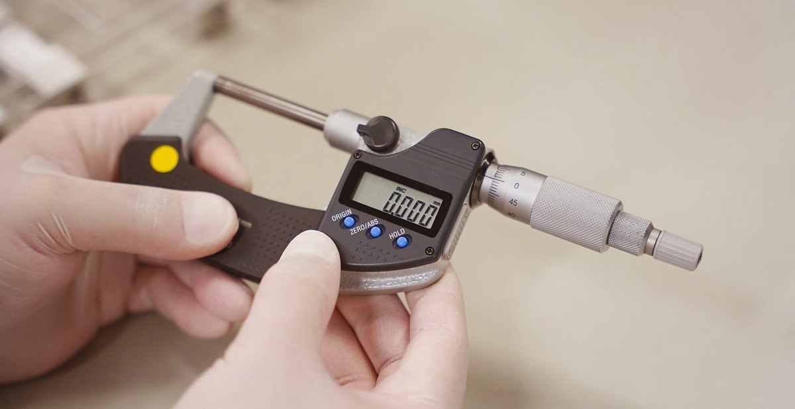
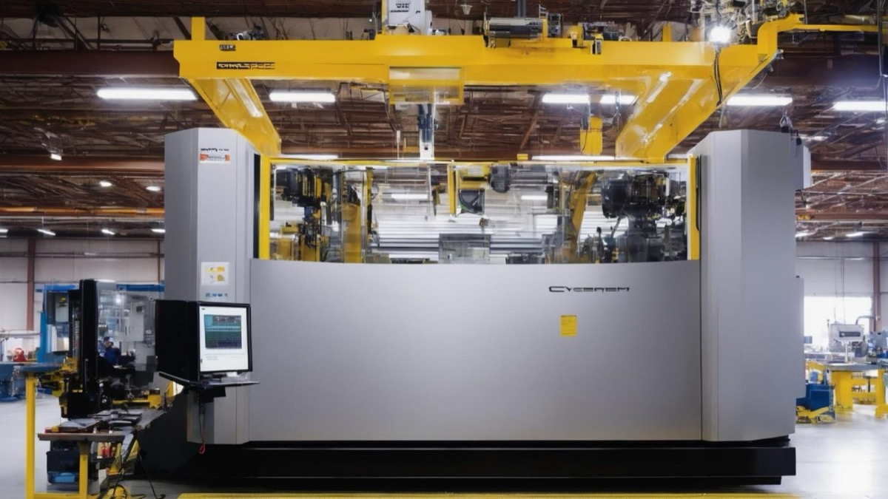

AI Agent / LLM 工程
企业级 Agent 设计、知识库工程、数据打通与可评估体系搭建。
施可，水滴跃动（Dropleap）创始人，中国科学技术大学软件工程硕士，连续创业者。16 年职业经历横跨软件工程、互联网产品、创业与企业经营。从软件工程师和技术管理者起步，先后在 NCS（新电信集团）、同程艺龙、哈啰出行等企业承担技术与产品职责，逐步形成以工程能力理解技术边界、以产品思维定义用户价值、以经营视角推动组织落地的复合工作方法。
首次创业从 0 到 1 全栈操盘，「球长部落」于 2016 年 1 月获紫辉创投 300 万天使轮投资，估值 2000 万。此后在同程艺龙负责产品与技术工作五年，在哈啰酒店担任产品负责人，并于 2022-2026 年任邻汇吧 COO，负责 KA 大客户经营体系与可复制单店模型。
2026 年创立水滴跃动，进入企业级 AI 落地领域，判断 AI 项目的成败在于部署而非模型本身，强调可靠性、可观测性、可评估性与持续运营能力在真实业务环境中的落地。
在交付之外，也研究生成式引擎优化（GEO）——GEO 不只是内容投放或关键词优化，而是让企业的能力被 AI 系统可读、可引用。著有《WorkBuddy 三部曲》《AI Coding：人人都是程序员》《FDE：AI 的胜负不在于模型》。
企业级 Agent 设计、知识库工程、数据打通与可评估体系搭建。
从机会识别、需求定义到产品上线与迭代的完整闭环。
KA 大客户服务体系与可复制的单店模型，服务过小米汽车、小米 3C、益禾堂、小天才、卡旺卡等客户。
搭建经营驾驶舱与指标体系，让决策可追溯、可复盘。
峰会主题演讲、圆桌主持，以及把方法沉淀为可传授的内容。
在苏州，带着小团队做制造业的 AI 落地。
2026 年我创立水滴跃动（Dropleap），作为 WorkBuddy 官方代理，帮制造企业在 2-4 周内跑通第一个 AI 场景——驻场交付，首个场景验收合格后再定下一步。从智能制造、精密加工到连锁餐饮，用的都是同一套做法。
把自然语言问题变成数据查询，跨系统取数，不用提报表需求、不用等。
把老师傅经验、SOP、产品规格、工艺文档数字化，可检索、附出处。
客户名称按约定匿名。

“报价速度是我们现在最大的竞争力。” —— 企业 CEO
做了什么 我带队接入 ERP 与客户数据，上线 AI 智能报价、库存预警看板、客户流失预警与经营驾驶舱。

“老师傅的经验终于留下来了。” —— 数字化负责人
做了什么 我带队接入订单、产线与质检数据，上线工艺知识库、质量追溯看板、设备预测维护与经营诊断报告。
三本 AI 应用著作——也是我把交付方法沉淀成可传授内容的尝试。

让非技术人做出可交付的产品。
在 GitBook 阅读 ↗
AI 项目的胜负，在部署，不只在模型。
在 GitBook 阅读 ↗
把企业 AI 从 PoC 带到可运营的业务系统。
在 GitBook 阅读 ↗两个已上架 WorkBuddy SkillHub 的 skill，一句话即可安装。
围绕点位、竞品、客流、客群、同类门店、风险、财务、谈判、行动清单九个维度做结构化评估，覆盖奶茶、咖啡、快餐、正餐、麻辣烫、烘焙六个品类。
把下面这句发给你的 AI，即可安装该 skill：
安装：skillhub.cn/install/skillhub.md user_5256a507/site-intelligence-report
完整 78 张韦特全牌与 18 种牌阵，中文解读，基于 GitHub 开源项目 lotus-tarot。
把下面这句发给你的 AI，即可安装该 skill：
安装：skillhub.cn/install/skillhub.md user_5256a507/rider-waite-cn
水滴跃动 Dropleap · 企业级 AI 落地服务商
WorkBuddy 官方代理。为制造业企业提供 AI 落地服务，以 2-4 周为节奏驻场推进：诊断、交付、复盘，再定下一步。
邻汇吧
负责 KA 大客户经营体系与可复制单店模型，服务汽车、茶饮餐饮、零售消费等多行业品牌客户。
哈啰酒店 · 哈啰出行
负责酒店业务产品方向，推动住宿场景与出行平台的协同。
同程网络科技 · 同程艺龙（HK:0780）
五年在线旅游领域的产品与技术工作，覆盖 C 端产品与平台能力建设。
苏州踢来踢去网络 ·「球长部落」
首次创业，从 0 到 1 全栈操盘。2016 年 1 月获紫辉创投 300 万天使轮投资，估值 2000 万。
新电信息科技（NCS）· 方正国际软件
从软件工程师成长为技术管理者，交付企业级软件项目。


从 0 到 1 搭建大客户服务体系，覆盖汽车、茶饮餐饮与零售消费等 19 家企业客户。
把单店经济模型与运营打法标准化，使单店可以被规模化复制。
2024 年，在峰会现场分享慢闪店与渠道实践。
破界·2024 刀法年度品效峰会 · 上海
第五届 TBI 杰出品牌创新节 ·「成于渠道」专场 · 上海
第五届 TBI 杰出品牌创新节 · 闭门早场开杠 · 上海
除了制造业 AI 落地这个主轴，也在同步做几条相关业务线。
生成式引擎优化平台
AI 电话数字员工
面向外国人的中国旅行指南
AI 塔罗解读平台
2026 世界杯快闪店常锡沪三城
点击二维码可放大
扫码加微信

扫码添加施可个人微信